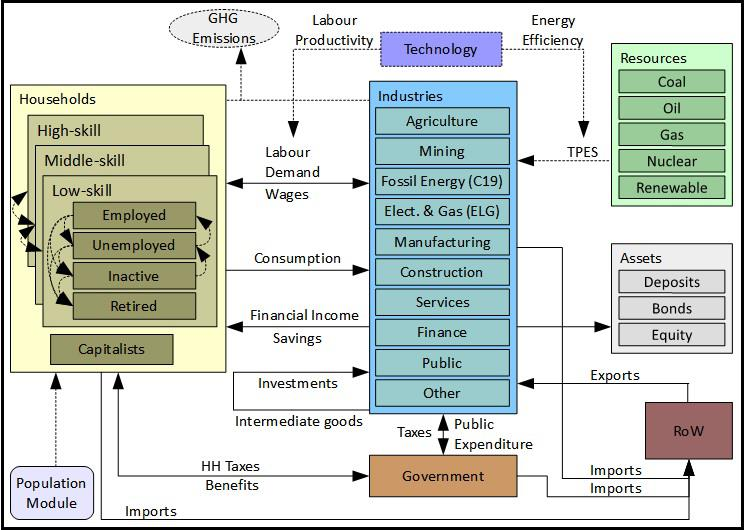
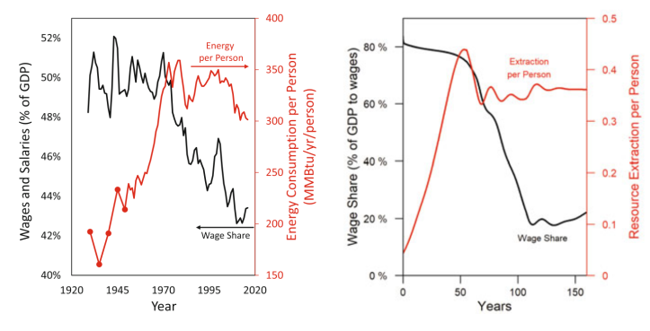
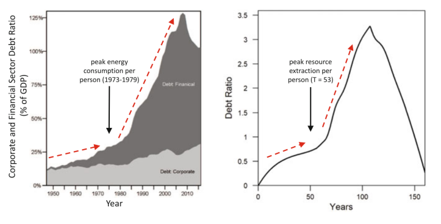

62 Economic Modelling
All models are wrong but some are useful.
It takes a model to beat a model.
62.1 Model-land
Thompson Abstract
Both mathematical modelling and simulation methods in general have contributed greatly to understanding, insight and forecasting in many fields including macroeconomics. Nevertheless, we must remain careful to distinguish model-land and model-land quantities from the real world. Decisions taken in the real world are more robust when informed by estimation of real-world quantities with transparent uncertainty quantification, than when based on “optimal” model-land quantities obtained from simulations of imperfect models optimized, perhaps optimal, in model-land. The authors present a short guide to some of the temptations and pitfalls of model-land, some directions towards the exit, and two ways to escape. Their aim is to improve decision support by providing relevant, adequate information regarding the real-world target of interest, or making it clear why today’s model models are not up to that task for the particular target of interest.
62.2 End of Theory
Bookstaber
The End of Theory: Financial Crises, the Failure of Economics, and the Sweep of Human Interaction
Our economy may have recovered from the Great Recession—but not our economics. In The End of Theory, Richard Bookstaber discusses why the human condition and the radical uncertainty of our world renders the standard economic model—and the theory behind it—useless for dealing with financial crises. What model should replace it? None. At least not any version we’ve been using for the past two hundred years. Instead, Bookstaber argues for a new approach called agent-based economics, one that takes as a starting point the fact that we are humans, not the optimizing automatons that standard economics assumes we are.
Bookstaber’s groundbreaking paradigm promises to do a far better job at preventing crises and managing those that break out. As he explains, our varied memories and imaginations color our economic behavior in unexpected hues. Agent-based modeling embraces these nuances by avoiding the mechanistic, unrealistic structure of our current economic approach. Bookstaber tackles issues such as radical uncertainty, when circumstances take place beyond our anticipation, and emergence, when innocent, everyday interactions combine to create sudden chaos. Starting with the realization that future crises cannot be predicted by the past, he proposes an approach that recognizes the human narrative while addressing market realities.
Sweeping aside the historic failure of twentieth-century economics, The End of Theory offers a novel and innovative perspective, along with a more realistic and human framework, to help prevent today’s financial system from blowing up again.
62.3 Jackson-Victor
The “new normal”: Hyper-Capitalism, Proto-Socialism, and Post-Pandemic Recovery
Jackson Abstract
Post-pandemic recovery must address the systemic inequality that has been revealed by the coronavirus crisis. The roots of this inequality predate the pandemic and even the global financial crisis. They lie rather in the uneasy relationship between labor and capital under conditions of declining economic growth, such as those who have pre- vailed in advanced economies for almost half a century. This paper explores the dynam- ics of that relationship using a simple stock-flow consistent (SFC) macroeconomic model of a closed economy. It examines in particular the role of two key factors—the savings rate and the substitutability (elasticity of substitution) between labor and capital—on the severity of systemic inequality under conditions of declining growth. The paper goes on to test the efficacy of three redistributive measures—a graduated income tax, a tax on capital and a universal basic income—under two distinct structural scenarios for an economy with a declining growth rate. We find that none of these measures is sufficient to control structural inequality when institutions aggressively favor capital over labor (hyper-capitalism). Taken in combination, however, under con- ditions more favorable to wage labor (proto-socialism), these same measures have the potential to eliminate inequality, almost entirely, even as the growth rate declines.
Jackson Memo
The two key structural factors, which determine the evolution of inequality under a declining growth rate, are (1) the savings rate and (2) the elasticity of substitution between labor and capital. Depending on the configuration of these factors, two radically different futures may emerge. Under one future, which we have described here as “hyper-capitalism” (Scenario 1), a constant savings rate and high sub- stitutability between capital and labor lead to accelerating inequality, even under a progressive combination of redistributive measures. Under another kind of future, which we describe as proto-socialism (Scenario 2), a declining savings rate and low substitutability between capital and labor, lead to declining inequality, which in combination with progressive redistributive policies, have the potential to eliminate inequality almost completely.
Hyper-capitalism is likely to emerge in a world where labor is increasingly (and easily) substituted with capital and the interests of the owners of capital are privileged over the rights of workers. These privileges encourage capitalists to continue to save even as the growth rate declines, leading to a rising capital to output ratio and an escalating inequality. Such a scenario could, for example, accompany a world in which an aggressive drive towards automation or the imple- mentation of artificial intelligence (AI) by monopolistic companies removes the need for wage labor across large swathes of the econ- omy. Failure to protect the livelihoods of the immiserated work force facilitates continued savings and investment by asset owners. By the same token, it concentrates incomes (and wealth) increasingly in a minority of the population, leading to the kinds of dystopian trends in inequality illustrated in Scenario 1. 13 Proto-socialism on the other hand aims for strong institutions to protect the rights of workers, introduce a job guarantee, and establish an adequate minimum wage. Such interventions slow down the sub- stitution of capital for labor. Attempts by capitalists to maintain a con- stant savings rate under these conditions lead (Figure 3a) to a dramatic collapse in the rate of return on investment, and a partial reversal in the relative fortunes of workers and capitalists. Faced with the prospect of declining rates of return, these conditions are more likely to lead to a decline in the rate of savings (Scenario 2) and a reduction in the capital intensity of the economy, features that will reinforce a more equal distribution of incomes. In short, proto-socialism is likely to involve a transition away from resource-intensive mass production processes and toward the evolu- tion of an economy of quality and service (Jackson, 2017). It might well also involve institutional innovations which better represent the interests of workers in the management of firms (Ferrera, 2017), bet- ter distribute the rewards of innovation to the populace (Varoufakis, 2016) and allow government to operate as an “employer of last resort” (Minsky, 1986). It will not have passed unnoticed that the sectors that emerge stronger under proto-socialism are precisely the labor-intensive sectors associated with care, distribution and maintenance—the frontline ser- vices of the pandemic—described at the beginning of this paper. Other labor-intensive sectors such as those associated with crafts, creativity, and community-based recreation and leisure (Jackson, 2021) are also likely to flourish under these conditions. Proto-socialism, in other words, could provide a robust basis for a post-pandemic recovery— even under conditions of low-growth.
Jackson (2021) Confronting inequality in the “new normal” : Hyper-capitalism, proto-socialism, and post-pandemic recover (pdf)
Thanks to (???) and Peter Victor. This paper is crucial to challenging the assumption, represented in the IPCC’s existing scenarios, that slower growth rates mean rising inequality. It all depends on policy, and the power of labour vis-à-vis capital. (Jason Hickel)
62.4 Eurogreen Model
Feasible alternatives to green growth
Abstract D’Alessandro
Climate change and increasing income inequality have emerged as twin threats to contemporary standards of living, peace and democracy. These two problems are usually tackled separately in the policy agenda. A new breed of radical proposals have been advanced to manage a fair low-carbon transition. In this spirit, we develop a dynamic macrosimulation model to investigate the long-term effects of three scenarios: green growth, policies for social equity, and degrowth. The green growth scenario, based on technological progress and environmental policies, achieves a significant reduction in greenhouse gas emissions at the cost of increasing income inequality and unemployment. The policies for social equity scenario adds direct labour market interventions that result in an environmental performance similar to green growth while improving social conditions at the cost of increasing public deficit. The degrowth scenario further adds a reduction in consumption and exports, and achieves a greater reduction in emissions and inequality with higher public deficit, despite the introduction of a wealth tax. We argue that new radical social policies can combine social prosperity and low-carbon emissions and are economically and politically feasible.
D’Alessandro (2020) Feasible alternatives to green growth (Paywall) SI (pdf)
D’Alessandro Presentation
Green Growth
The main response to the global challenges posed by climate change are currently based on Green Growth policy proposals, namely: • mainstream and institutional paradigm focused on technological optimism; • market-oriented view: trickle-down effect should improve welfare and job creation; • one-size-fits-all solution: GDP growth
Critiques to the ability of market mechanisms and innovations to: - foster material decoupling (Wiedmann, 2015) - meet planetary boundaries (Steffen, 2015, O’Neill, 2018) - avoid critical transitions (Scheffer, 2012) - ensure social justice: within-country inequality (Piketty, 2014) - overcoming the rebound effect: % RES and CO2 per capita
Green Deal
Recognizes the need to address inequality and environmental issues in a unified perspective combining social policies with green growth measures
Post-Growth
Advocates that continuous economic growth and ecological sustainability are incompatible: down-shift of economic scale. Social policies becomes essential to face inequality
EUROGREEN
A macrosimulation model tailored to compare the long-run effects, synergies and trade-off of these three alternative narratives.

Indicators
GHG emissions with respect to 1990. Targets: −40% in 2030 and −80% in 2050 • Gini coefficient for income inequality: from 0% (no ineq.) to 100% (max ineq.). Computed over 13 groups (3 skill by 4 work status + capitalists) including incomes from labour, financial assets and wealth • Deficit/GDP: fiscal sustainability • GDP growth • Unemployment: total and by skill • Energy Mix: shift in source composition in electric power generation and TPES.
Discussion
• Our results suggest that there are no win-win solutions • Similar reductions in emissions can result in radically different social consequences in terms of income distribution, employment, and fiscal stability. • Green Growth Paradox ⟹ The effectiveness of GHG reductions depends on the failure to promote GDP growth. • Techno-scepticism: Environmental policies alone fails to deliver the advocated improvements in employment and income distribution • Radical social policies (JG and WTR) can combine social prosperity and low-carbon emissions • Lower aggregate demand helps emission target achievement
D’Alessandro (2020) feasible Alternatives - Presentation (pdf)
O’Neill
** ‘Green Growth’ will increase inequality and unemployment unless accompanied by radical social policies.**
The economy is embedded within society, which is in turn embedded within the biosphere. Economic processes are therefore analysed in terms of flows of biophysical resources and social outcomes not just in terms of flows of money, as in conventional macroeconomic models.

Ecological macroeconomic models allow for multiple non-substitutable goals to be explored (e.g. sustainability, equity, and human well-being). These models have been developed to address issues such as the link between growth and inequality 5 and the effect of climate change on financial stability.
Green growth reduces greenhouse gas emissions, but inequality and unemployment both rise. The Green New Deal dramatically lowers unemployment and reduces inequality, but at the expense of an increase in the government deficit-to-GDP ratio. Degrowth reduces emissions and inequality further than the other two scenarios, but it leads to a higher increase in the deficit-to-GDP ratio (because GDP decreases). In short, there is no win win scenario.
These results have important implications. First, they suggest that a purely market-based green growth strategy is likely to have serious negative side effects. These side effects may be corrected by complementing environmental policies with strong social policies, such as working-time reduction, a guaranteed jobs programme, and a wealth tax. Second, the results suggest that degrowth can dramatically reduce environmental impact and lead to improved social outcomes (e.g. more leisure time, higher employment, greater equality), provided the appropriate policies are in place. Third, a Green New Deal, with an explicit focus on achieving a just transition 7 , may represent a compromise that advocates of both green growth and degrowth can support.
The Eurogreen Model makes a number of important contributions, but like any model it also has limitations. Importantly, the model does not assess whether the degree of decoupling assumed in its green growth scenario is actually possible, an assumption that has been challenged empirically.
The degrowth scenario does not include a number of additional changes that have been put forward by degrowth authors, such as alternative business models, new measures of progress, or public money creation 9 . For example, central banks could potentially create money to help fund a low-carbon transition (as they created money to bail out the banks), which would reduce the government deficit.
We need to choose our economic policies carefully. We cannot expect economic growth to deliver sustainability, or green growth to deliver social equity. If we want to achieve a sustainable and just society, then we need to move beyond the pursuit of growth, and target these outcomes directly.
ONeill (2020) Beyond Green Growth (pdf)
Russel (2020) Climate crisis: Is it time to ditch economic growth? (DW)
Mudge (2020) Fact check: Does climate protection stifle economic growth?
62.5 HARMONEY
King Abstract
This paper explains how the Human and Resources with MONEY (HARMONEY) economic growth model exhibits realistic dynamic interdependencies relating resources consumption, growth, and structural change. We explore dynamics of three major structural metrics of an economy. First, we show that an economic transition to relative decoupling of gross domestic product (GDP) from resource consumption is an expected pattern that occurs because of physical limits to growth, not a response to avoid physical limits. While increasing operational resource efficiency does increase the level of relative decou- pling, so does a change in pricing from one based on full costs to one based only on marginal costs that neglect depreciation and interest payments. Marginal cost pricing leads to higher debt ratios and a perception of higher levels of relative resource decoupling. Second, if assuming full labor bargaining power for wages, when a previously-growing economy reaches peak resource extraction and GDP, wages remain high but profits and debt decline to zero. By removing bargaining power, profits can remain positive at the expense of declining wages. Third, the internal structure of HARMONEY evolves in the same way the post-World War II U.S. economy. This is measured as the distribution of intermediate transactions within the input- output tables of both the model and U.S. economy.
King Memo
HARMONEY v1.1 is a system dynamics model centered on simulating a set of ordinary differential equations using stock-flow consistent tracking of monetary flows. HARMONEY v1.1 is still a toy model, which is to say it is not yet calibrated (we’re working on it!) to a real economy, such as the United States. Nonetheless, it has critical features and structural assumptions that make it applicable and valuable for comparing its trends to long-term trends in real-world data.
This is to say, an important part of HARMONEY is that it has a conservation of flow principle for both mass (as physical resources, energy or minerals, extracted from the environment) and money (at any given instant flows of money are tracked between firms, households, and private banks). While this idea has been around for many decades, this is still relatively unique for macroeconomic models.
Here are several assumptions in the design of the model that help explain why it can mimic long-term real-world trends relating energy consumption and economic variables
The resource that supports the economy is a regenerative renewable resource stock, such as a forest.
Resource (mass, energy) consumption is required for three purposes in the model, just like the real world: To operate machines (as fuel) To become new machines when they are manufactured (embodied in new capital) To “operate” or feed people to keep them alive (as food)
Money is effectively defined as all of the following the compensation labor (workers) receive, the profits received by companies, money (as credit) is created when banks give loans to companies to invest in capital at levels beyond their profits, and the money is destroyed when companies pay back debt, and the interest payments on the debt, or loans given to companies.
There is no government in the model.
Population declines when there is not enough resource consumption for households.
The HARMONEY model overcomes three neoclassical limitations:
the inadequate incorporation of natural resource consumption as required physical inputs to operate capital,become embodied in new capital investment, and keep people alive;
the lack of consideration of credit, or private debt, in a modern economy; and
the assumption that factors of production contribute to growth in relation to their cost share.
Unlike neoclassical growth theory (exogenous or endogenous), the post-Keynesian and biophysical structure of the HARMONEY model does not assume an aggregate production function, TFP, or directly impose scaling of GDP to aggregate labor, capital, or natural resources consumption. Thus, the model enables a different exploration into the effects of resource efficiency and whether the economy has similar energy-GDP scaling as biological systems, and for the same reasons, throughout a growth cycle.
Global primary energy consumption (PEC) and gross world product (GWP) scale approximately linearly from 1900-1970, and since 1970 scale sublinearly at \(PEC ∝ GWP^{2/3}\) Post-1980 trends show PEC of countries scales with their GDP nearly as \(PEC ∝ GDP^{3/4}\)
… explicitly considers the “energy cost of maintaining the structure and function” of an economy as a complex system …does not address the exact scaling (i.e., value of b) between energy consumption and GDP, but it explains why we expect a transition from superlinear or linear scaling to sublinear scaling, just as observed in biological systems.
…also contributes to the discussion of decoupling of GDP from PEC via increases in energy effi- ciency. Sublinear scaling in the economy, often referred to as a state of declining energy intensity (= PEC/GDP), is often seen as a consequence of increasing energy efficiency. …economy-wide rebound effects might erode more than half the reductions in engineering energy efficiency investments.
King Conclusion
The purpose of this paper was to explore the coupled growth and structural dynamic patterns of the HARMONEY model (v1.1) as updated from King (2020). The differences in the simulation results in this paper versus King (2020) derive from the more robust method in solving for prices and the explicit inclusion of wage bargaining power that augments a short-run Phillips Curve. Despite the assumption of a single regenerative natural resource (akin to a forest) to support the modeled economy, HARMONEY v1.1 exhibits several important high-level structural, biophysical, and economic patterns that compare well with global and U.S. data, and thus provide insight into long-term trends. The HARMONEY model provides a consistent biophysi- cal and monetary basis for explaining the progression in global and country-level data from an increasing or near constant energy intensity (energy consumption/GDP) to one of decreasing energy intensity. That is to say, both HAR- MONEY and global data first show a period of increasing growth rates, when the growth rate of natural resource con- sumption exceeds or is nearly equal to the growth rate of GDP, followed by a period of decreasing growth rates when the growth rate of resource consumption is lower than that of GDP. Thus, given this latter condition referred to as a state of relative decoupling, we conclude that it occurs due to a natural progression of self-organized growth, and not necessarily from independent conscious choice by actors within the economy to pursue resource efficiency. While we show that explicit choices to increase resource consumption efficiency in capital (e.g., machines) do increase the level of relative decoupling, we also show the choice of price formation affects apparent decoupling just as much. When basing prices on only marginal costs the econ- omy appears more decoupled than if prices are based on full costs that include depreciation and debt interest payments. Further, marginal cost pricing generates higher debt ratios than full cost pricing, implying higher debt levels might pro- vide only a perception of a more decoupled economy. Thus, relative decoupling of GDP from resource consumption rep- resents an expected stage of growth, still similarly dependent on resource consumption, rather than a stage during which an economy is less constrained by resource consumption. When assuming full labor bargaining power for wages, such that wages increase with inflation, once resource con- sumption stagnates, profit shares decline to zero and wage share increases. An explicit reduction in labor bargaining power at peak resource consumption enables some profits to remain. Thus, the HARMONEY model provides a basis for arguing that because profits decline to zero once resource consumption peaks under a full bargaining power situation, a new pressure emerges to reduce wage bargaining power of labor to ensure some level of profits at the expense of labor. This reasoning helps explain the wage stagnation and declin- ing wage share experienced in the U.S. since the 1970s.
King (2021) Interdependence of Growth, Structure, Size and Resource Consumption During an Economic Growth Cycle (pdf) (pdf SI)
King (2019) HARMONEY-1 (pdf) King Website
Fix on King
Figure shows King’s key result. Without tuning it to do so, the HARMONEY model predicts that as resource use plateaus, the wage share of income should decline (top right). It so happens that this is exactly what ocurred in the United States. As energy use (per person) plateaued, the wage share of income plummeted (top left). HARMONEY also predicts that after resource use peaks, debt (as a share of GDP) should explode and then later peak (bottom right). Again, the model’s prediction is eerily similar to US history (bottom left).
 
Figure: Results from King’s HARMONEY model. Top left: the wage share of income in the US declined as energy use per person plateaued. Top right: King’s HARMONEY model predicting the same phenomenon. Bottom left: The growth and peak of US corporate and financial debt. Bottom right: King’s HARMONEY model predicting the same phenomenon.
One more thing to mention is that HARMONEY does not use an aggregate production function. This is important, because there are many problems with such functions. Perhaps the most glaring flaw is that the standard production function (the Cobb-Douglas) is a tautology. It is a rearrangement of a national accounting identity. Hence, when systems modelers use such a function, they undermine what may otherwise be a sound model.3 By not using a production function, HARMONEY avoids this misstep.
62.6 Input-Output
Technology matrices (IO tables) theoretically capture the conditions of production. Most presentations counterfactually assume they are constant (e.g. constant returns to scale). However, once the matrices are allowed to vary with demand then they capture market value too.
62.7 LowGrow SFC
Jackson
A simulation model of the Canadian economy
LowGrow SFC is a system dynamics model developed by Tim Jackson and Peter Victor, incorporating many features developed over several years. LowGrow SFC brings together: 1) the environmental and resource constraints on economic activity; 2) a full account of production, consumption, employment and public finances in the ‘real economy’ at the level of the nation state; 3) a comprehensive account of the financial economy, including the main interactions between financial agents.
LowGrow SFC is ‘stock-flow consistent’. this means that expenditures by each sector are incomes of other sectors and financial assets of each sector are financial liabilities of other sectors, and vice versa. The 6 sectors in LowGrow SFC are: households, non-financial firms, financial firms, the central bank, government, and the rest of the world. Interactions within and between these spheres of interest are modelled using a system dynamics framework and used to generate scenarios for Canada.
[Jackson (2022) LowGrow SFC (https://timjackson.org.uk/ecological-economics/lowgrow-sfc/)
62.8 MEDEAS
A new open-source energy model to guide the transition to a low carbon European socio-economy.
MEDEAS-World model is a global, one region-aggregated economy-energy-environment model (or Integrated Assessment Model, IAM) which runs from 1995 to 2050.
MEDEAS-World model serves as framework for the development and evolution of the European model version, which is the core of the MEDEAS project.
MEDEAS-World model has been designed applying System Dynamics, which facilitates the integration of knowledge from different perspectives as well as the feedbacks from different subsystems.
The model, originally built in Vensim DSS software for Windows Version 6.4E (x32), is being translated to Python programming language (open source) - available from January 2018
MEDEAS-World model consists of a modular and flexible structure, where each module can be expanded/simplified/replaced by another version or submodel. The model is structured into 7 submodules:
Economy: The economy of MEDEAS is modelled following a post-Keynesian approach assuming disequilibrium (i.e. non-clearing markets), demand-led growth and supply constraints. The economic structure is captured by the integration of IOA (35 industrial sectors and households).
Energy: This module includes the renewable and non-renewable energy resources potentials and availability taking into account biophysical and temporal constraints. In total, 5 final fuels are considered (electricity, heat, solids, gases and liquids) and a diversity of energy technologies are modelled. A net energy approach has been followed.
Infrastructures: Energy infrastructures represent the infrastructures of power plants to generate electricity and heat.
Materials: Materials are required by the economy and MEDEAS especially tracks the material requirements for the construction and O&M of the energy infrastructures. The extraction demands are subsequently compared with the levels of available metrics of reserves and resources.
Land Use: this is the less developed module of MEDEAS, and it mainly accounts for the land requirements of the RES energies.
Climate Change: This module projects the climate change levels due to the GHG emissions generated by the human societies, which also feed-back through a damage function.
and Social and Environmental Impacts Indicators: this module translates the “biophysical” results of the simulations into metrics related with social and environmental impacts. The objective of this module is to contextualize the implications for human societies in terms of well-being for each simulation.The modules of economy and energy are the most extensive and reach the highest degree of disaggregation. Interrelations between the 7 modules: the main variables that connect the different modules are represented by arrows. Most modules have bi-directional linkages, excepting for the Land-use and Social and Environmental impacts indicators which mainly report outputs from the simulations without feed-backing to rest of the structure.
Novelties of MEDEAS-World in relation to the existing models in the literature
Economic submodule following a post-Keynesian approach assuming disequilibrium (i.e. non-clearing markets), demand-led growth and supply constraints,
Integration of Input-Output Matrices within a System Dynamics structure,
Comprehensive analysis of the techno-sustainable potential of RES for electricity and heat generation,
Consideration of geological availability of fossil fuel resources given stock and flow limits,
Supply-demand closures model implementation. The energy shortage determines the feedback between the energy and the economic submodule,
Estimations of potential mineral scarcity,
Estimation of EROI of the system and feedback,
The effects of climate change are feed-backed into energy consumption,
Social and environmental impacts indicators which contextualize the implications for human societies in terms of well-being for each simulation.This way, MEDEAS-World incorporates three limits to growth that are rather rarely considered in the literature: energy availability taking into account biophysical and temporal constraints, declining EROI levels and consistent climate change impacts.